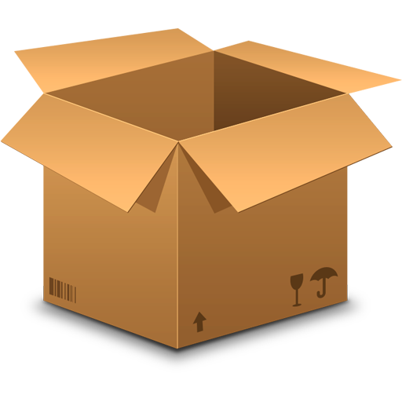

Australian e-Commerce InsightsTracking the consumer journey from global market spikes to the local Australian checkout

Australian e-Commerce InsightsTracking the consumer journey from global market spikes to the local Australian checkout
A look at the global e-commerce market, how it functions today, and where it is heading in the coming years.
As an introduction, the global online market is not just about regular shoppers. Most of it, about 78.4%, is actually businesses selling to other businesses (B2B). While the shopping we do as individuals (B2C) and selling to each other (C2C) are important, they make up a much smaller part of the total market.
After things settled down following the big changes in 2020, online spending is now growing fast again. We expect it to reach a total of $82.3 billion by 2025. This shows that online shopping is becoming a steady and reliable part of our everyday lives..
This map shows which parts of the world sell the most items online. You can see that Asia-Pacific is the biggest market by far, holding over half of the global share, which is 54.3%. Other areas like North America and Europe also have strong sales, while Latin America, the Middle East, and Africa are still growing. This map helps us see where most e-commerce activity happens across the globe.
Exploring the Australian e-commerce landscape: how we shop, pay, and where the nation's digital spending is concentrated.
A few years ago, online shopping was just an 'extra' way to buy things. But after 2020, it became everyone's go-to habit. We aren't going back, more Australian households than ever are now living their lives online.
The growth isn't stopping here. Think of this chart like a digital family tree that's constantly getting bigger. Every year, millions more accounts are being opened, showing that in the future, almost everything we do from banking to shopping will happen through a screen.
So, how are we actually spending our money? It's all about convenience. We're moving away from old-school habits and using whatever makes the checkout fastest, whether it's a card, a digital wallet, or 'Buy Now, Pay Later.' If it's easy, we use it.
E-commerce spending is highly concentrated in major metropolitan hubs, with New South Wales leading the nation at $26.4 billion. This map shows that while online shopping is a national habit, the industry's financial engine remains firmly centered in our largest capital cities.
Click a generation to see insights
Online spending isn't equal, it's a reflection of distinct generational economic priorities. While Millennials and Gen X dominate the digital wallet, older cohorts provide a steady, reliable foundation. But numbers alone don't reveal the full story. Beyond the dollar amount, how do these generations actually choose to shop? We now look at the tug-of-war between digital carts and physical shelves.
Data shows that we are a nation of hybrid shoppers. Even the most tech-native generations maintain a significant commitment to in-store shopping. This reveals that the Australian retail landscape isn't about choosing one channel over the other, it is about the seamless integration of both.
While the big-ticket items like Online Marketplaces and Food & Liquor capture the highest volume of spend, the true catalyst for this growth lies in the generational shift we have been exploring.
Uncovering the key motivators that drive Australian consumers to choose digital platforms for their daily shopping needs.
The data paints a clear picture: Australia's digital marketplace is currently anchored by the sheer scale of platforms like Amazon. However, this reach isn't accidental, it is a direct response to the primary behavioral trigger of the modern Australian shopper.
As our preference data confirms, Free Delivery stands as the ultimate catalyst for digital transactions. By removing the friction of shipping costs, leaders like Amazon have successfully aligned their value proposition with the number one demand of the Australian consumer.
As we embrace the ease of e-commerce, it is essential to stay aware of the digital risks that can affect Australian shoppers.
Our choropleth map highlights a critical trend: digital threats are not distributed equally. Currently, Queensland reports the highest rate of scams per 100k people. Whether through booming local digital-first adoption or rapid growth in e-commerce hubs, Queenslanders are currently on the frontline of these online traps.
Understanding your risk profile requires looking beyond just the number of reports. While Phishing and Buying & Selling scams are the most frequent hurdles for the everyday shopper, Investment Scams represent the most significant financial danger, often hiding behind the same mask of 'local opportunity' as legitimate growth.